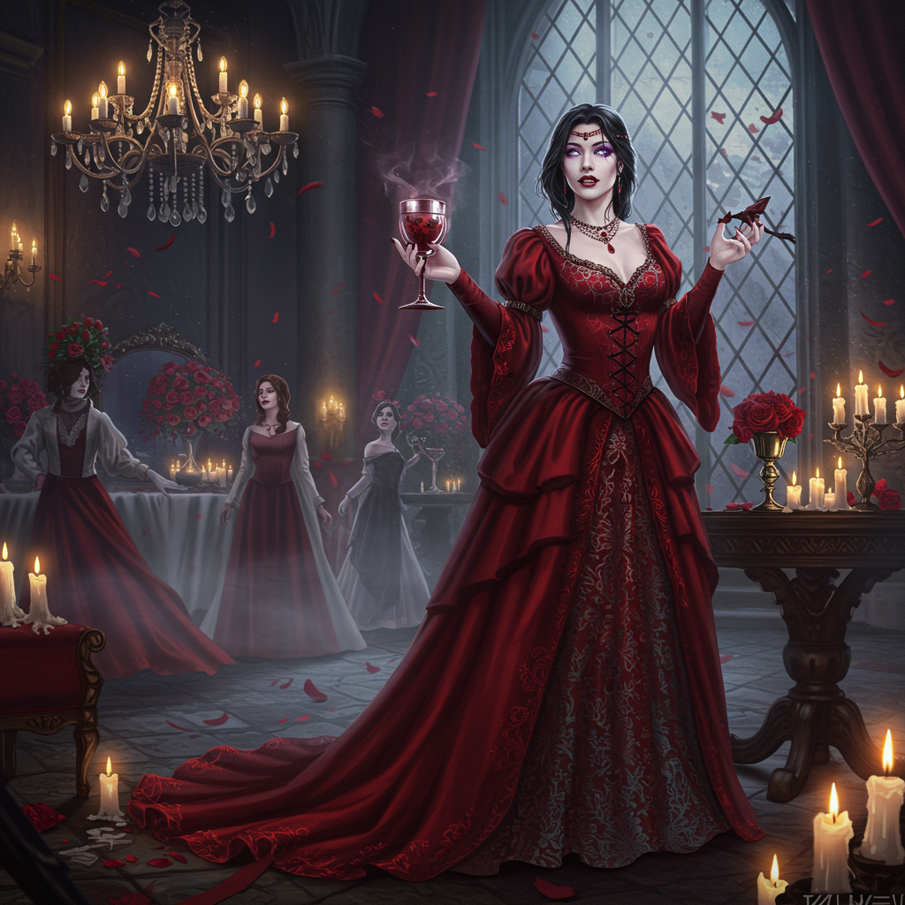

Elige el Género de tu Personaje
Selecciona si tu personaje será hombre o mujer. Esta elección influirá en la narrativa y personalidad de tu vampiro.
Hombre

Selecciona si tu personaje será hombre o mujer. Esta elección influirá en la narrativa y personalidad de tu vampiro.